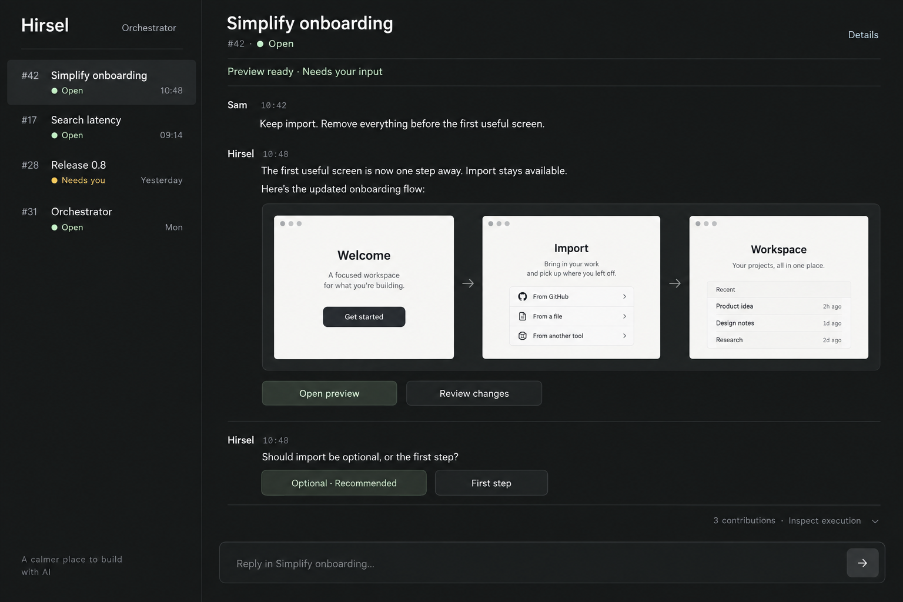

One collaborator. A place for every thread.
Three ways to talk, follow progress, and shape the result. The execution stays underneath.
Conversation
A quiet exchange, with decisions and results appearing where you discuss them.

The image could not load. Reload this page or open the original above.
What this makes easy
The tradeoff
Compare the structures and Thread model
| Direction | Primary surface | Where the work appears | Planner metadata |
|---|---|---|---|
| A · Conversation | Ongoing correspondence | Results embedded in the exchange | Hidden behind Details |
| B · Journal | Conversation and meaningful milestones | Current outcome pinned above history | Quiet margin notes |
| C · Workbench | The current preview or change | Large stage beside conversation | Collapsed details strip |
A Thread is a durable subject, never a worker assignment. Created by records provenance; coordinating identifies current responsibility. Multiple workers can contribute without becoming separate conversations. All three concepts keep one interlocutor and make raw execution inspectable.